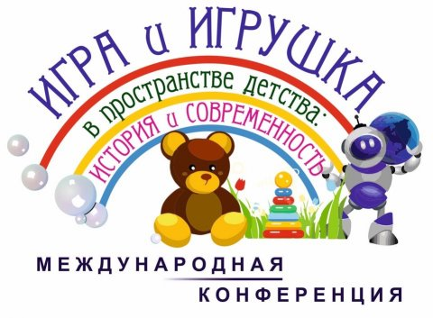

Добро пожаловать
Первая международная научно-практическая конференция
«ИГРА И ИГРУШКА В ПРОСТРАНСТВЕ ДЕТСТВА: ИСТОРИЯ И СОВРЕМЕННОСТЬ»,
посвященная 100-летию дошкольного образования
в Республике Коми
и 35-летию Музея дошкольного образования
Республики Коми.

1 ноября 2018 года
Государственное профессиональное образовательное учреждение
«Сыктывкарский гуманитарно-педагогический колледж
имени И.А. Куратова»